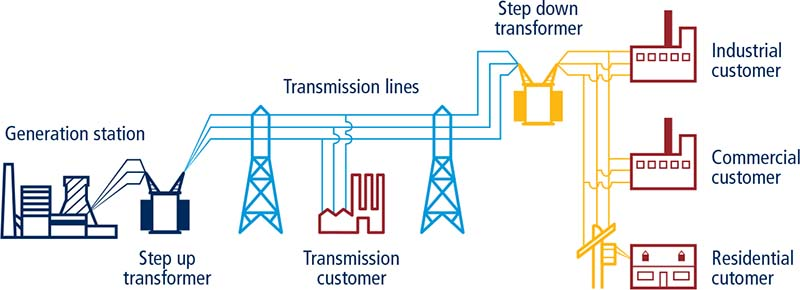
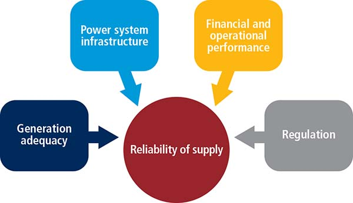
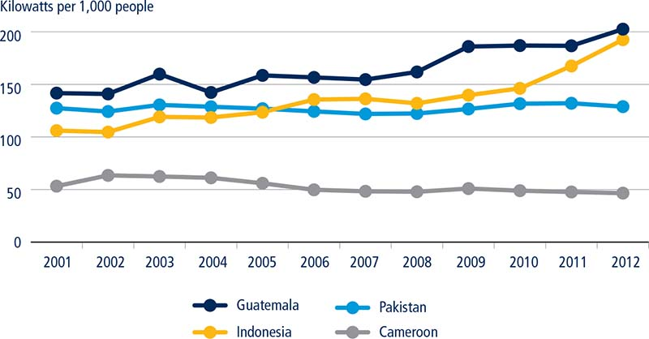
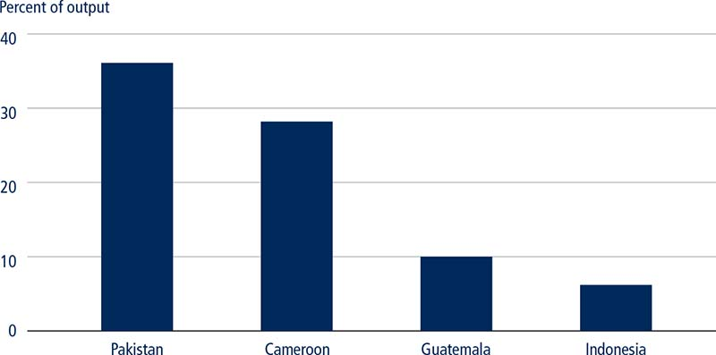

Since 2011 Doing Business, through its getting electricity indicator set, has recorded the time, cost and number of procedures required for a small to medium-size business to legally connect a commercial warehouse to the electrical grid. Starting in 2015, the reliability of supply and the price of electricity have also been measured. Reliability is measured through quantitative data on the duration and frequency of power outages as well as through qualitative information, which includes—among other things—the mechanisms put in place by the utility for monitoring power outages. These measures are important because a reliable electricity supply is critical for enterprises to operate and grow. According to 2016 World Bank Enterprise Survey data, business owners in around 30% of developing economies perceive unreliable electricity services as a major obstacle to their activities. In Sub-Saharan Africa, where economies suffered an average of 690 hours of outages in 2015,1 the annual economic growth drag of a weak power infrastructure is estimated to be about two percentage points.2 In addition to negatively affecting business operations, an unreliable supply can compromise an economy’s overall well-being. For example, Beirut residents cope with an average of three hours with no electricity every day. Residents in other areas of the country must endure 12 hours of daily power outages. The average Lebanese household must then resort to generator usage, spending $1,300 on electricity each year—equivalent to almost 15% of income per capita.3
Minimizing the number and the duration of power outages is critical for societies at large. Although electricity is ultimately provided by a distribution utility (the “last step” in the supply chain), it is not the only entity responsible for providing a stable supply, as many other actors play an important role throughout the process of generation, transmission and distribution of electricity. This case study focuses on lower-middle-income economies with varying levels of electricity supply reliability. By comparing different aspects of their energy sectors, this chapter highlights some key elements and actors that can drive, or prevent, a reliable electricity supply.4
▪ The getting electricity indicators measure the reliability of electricity supply using data on the duration and frequency of power outages, among other metrics.
▪ A broad range of variables impact the reliability of electricity supply. These include the electricity generation adequacy, the condition of power system infrastructure, utility financial and operational performance and energy sector regulation.
▪ Evidence from four lower-middle-income economies with varying levels of reliability suggests that continuous investment in infrastructure is essential to ensure a reliable electricity supply.
▪ Indonesia implemented structural changes to its energy sector, increased investment in infrastructure and introduced regulatory initiatives to improve overall power reliability.
▪ Guatemala liberalized its energy sector and adopted different tariff strategies while maintaining incentives to enable cost recovery. These measures, coupled with the presence of an overarching regulatory body, fostered a high level of power reliability in Guatemala City.
▪ In the cases of Cameroon and Pakistan, inadequate end-user tariff levels and high transmission and distribution losses had an impact on the overall financial standing of utilities—and, in turn, on the reliability of supply.
▪ The experience of these economies suggests that utilities must ensure a healthy financial position so they can invest the necessary resources to increase the reliability of electricity supply.
A power system consists of three main components: generation power plants, which use resources like hydropower, coal or renewables to produce electricity; the transmission network, consisting of a high voltage network (usually above 35 kilo-volts) used to transmit electricity from the generation station to the distribution network; and the distribution network, a low-to-medium-voltage network that is used to deliver electricity to customers (figure 4.1).
FIGURE 4.1 Doing Business measures the connection process at the level of distribution utilities

Source: U.S.-Canada Power System Outage Task Force 2004.
The reliability of electricity supply is determined by multiple interdependent factors. This case study focuses on four main areas which directly impact the power sector: electricity generation adequacy, power system infrastructure, utility financial and operational performance, and energy sector regulation (figure 4.2).
FIGURE 4.2 Various factors affect the reliability of electricity supply

Electricity generation is the basis of any power system, and generation adequacy is determined by the availability of resources as well as by their cost. If an economy has sufficient domestic energy resources and the necessary technological conditions, generation may be assured at a lower cost compared to economies that rely on imported fossil fuels. Additionally, energy self-reliance may ensure a higher reliability of supply as it reduces an economy’s vulnerability to supply shortages in the global commodity markets.
The upkeep and the technical condition of a power system’s infrastructure directly affect its operation and, therefore, the duration and frequency of power cuts. Poor upkeep is further exacerbated when an economy faces exogenous shocks or inclement weather. In Zambia, for example, poorly maintained distribution lines coupled with insufficient rainfall due to the El Niño weather phenomenon resulted in electricity shortages in 2015—with Lusaka experiencing 137 hours of outages per customer. Such power cuts undermine the economy; each minute of outage costs $9,000 to the Zambian mining sector.5
The financial performance of a utility depends on its ability to generate sufficient revenue to cover the costs of providing electricity and to ensure the profitability of its operations. End-user tariffs are a central aspect of the sector’s financial performance because the revenues of all market players in an energy system—including the generation, transmission and distribution companies—come from electricity bills. In principle, tariffs take into account the costs involved in the operation of the power system. However, when tariffs do not allow for full cost recovery, insufficient revenues accrued by distribution utilities can create financial constraints across the power system. This may force cutbacks on maintenance spending and capital investments, resulting in increased production costs and a deterioration of power system reliability. In addition to tariff pricing, a utility’s operational performance is crucial for the electricity sector as without proper attention to market factors, its ability to ensure electricity provision can be compromised. Ownership structure in the power sector varies greatly across economies, including purely public, private, or mixed partnership. Regardless of a utility’s ownership type, having an efficient management structure is essential.
Finally, it is the role of the energy regulator to set the “rules of the game” for all players. Since the electricity market is often monopolistic, only an independent regulator is in a position to supervise the price of electricity and ensure consumer protection. In terms of electricity reliability, the regulator may set objectives regarding utilities’ performance as well as deterrents to reduce the duration and frequency of outages. An example of a financial deterrent can be setting a threshold for the number and/or duration of power outages. In that case, when outages surpass a certain threshold, the regulator can impose penalties or allow for customers to receive compensation. Doing Business data reveal that low- and lower-middle-income economies using such financial deterrents had 53 power cuts on average in 2015, while economies in the same income group without financial deterrents to limit outages had three times more outages.
To assess the power reliability in different economies across the dimensions highlighted, this study looks at four lower-middle-income economies. Guatemala and Indonesia are examples of economies that provide a reliable electricity supply in the main business cities, having registered low levels of outages in 2015, according to Doing Business data (table 4.1.). Cameroon and Pakistan, however, have outages on a regular basis and are examples of economies providing an unreliable supply for customers (table 4.2.).6 For the other aspects analyzed, the majority of the data are from 2014. In some cases, newer data were available but the same base year was chosen for cross-comparability purposes.
TABLE 4.1 Reliability of supply and transparency of tariff index for Guatemala and Indonesia
Reliability of supply and transparency of tariff index (0–8) |
Guatemala |
Indonesia |
7 |
6 |
|
Total duration and frequency of outages per customer a year (0–3) |
2 |
2 |
System average interruption duration index (SAIDI) in 2015 |
3.7 |
2.6 |
System average interruption frequency index (SAIFI) in 2015 |
2.6 |
1.7 |
Mechanisms for monitoring outages (0–1) |
1 |
1 |
Does the distribution utility use automated tools to monitor outages? |
Yes |
Yes |
Mechanisms for restoring service (0–1) |
1 |
1 |
Does the distribution utility use automated tools to restore service? |
Yes |
Yes |
Regulatory monitoring (0–1) |
1 |
1 |
Does a regulator monitor the utility’s performance on reliability of supply? |
Yes |
Yes |
Financial deterrents aimed at limiting outages (0–1) |
1 |
1 |
Does the utility either pay compensation to customers or face fines by the regulator (or both) if outages exceed a certain cap? |
Yes |
Yes |
Communication of tariffs and tariff changes (0–1) |
1 |
0 |
Are effective tariffs available online? |
Yes |
Yes |
Are customers notified of tariff changes at least 1 month ahead of time? |
Yes |
No |
Source: Doing Business database.
Note: SAIDI is the average total duration of outages over the course of a year for each customer served, while SAIFI is the average number of service interruptions experienced by a customer in a year. For Indonesia, SAIDI/SAIFI data are for Jakarta only.
TABLE 4.2 Reliability of supply and transparency of tariff index for Cameroon and Pakistan
Reliability of supply and transparency of tariff index (0–8) |
Cameroon |
Pakistan |
3 |
0 |
|
Total duration and frequency of outages per customer a year (0–3) |
0 |
0 |
System average interruption duration index (SAIDI) in 2015 |
89 |
861.7 |
System average interruption frequency index (SAIFI) in 2015 |
23.3 |
387.2 |
Mechanisms for monitoring outages (0–1) |
0 |
1 |
Does the distribution utility use automated tools to monitor outages? |
No |
Yes |
Mechanisms for restoring service (0–1) |
0 |
1 |
Does the distribution utility use automated tools to restore service? |
No |
Yes |
Regulatory monitoring (0–1) |
1 |
1 |
Does a regulator monitor the utility’s performance on reliability of supply? |
Yes |
Yes |
Financial deterrents aimed at limiting outages (0–1) |
1 |
1 |
Does the utility either pay compensation to customers or face fines by the regulator (or both) if outages exceed a certain cap? |
Yes |
Yes |
Communication of tariffs and tariff changes (0–1) |
1 |
0 |
Are effective tariffs available online? |
Yes |
Yes |
Are customers notified of tariff changes at least 1 month ahead of time? |
Yes |
No |
Source: Doing Business database.
Note: Under the getting electricity methodology if SAIDI/SAIFI is 100 or more then the economy is not eligible to score on the reliability of supply and transparency of tariff index. For Pakistan, SAIDI/SAIFI data are for Karachi only.
From an energy perspective, Indonesia faces considerable challenges: it has the fourth largest population globally, a complex geography and falling oil reserves. Nevertheless, Indonesia has achieved a high level of electrification with 96% of the total population having access to electricity in 2012, up from 67% in 1990.7 Furthermore, the frequency and duration of power outages in Jakarta and Surabaya today are low compared to other economies in East Asia and the Pacific. System average interruption duration index (SAIFI) data suggest that a business in Jakarta only suffered two outages in 2015, almost nine times less than the regional average. As electricity outages and tariff levels are relatively low in Java,8 where over half of Indonesians live, it is then not surprising to observe that the World Bank Enterprise Surveys report that less than 1% of firms in Indonesia see electricity as their “biggest obstacle”—compared to almost 10% of firms worldwide. This reflects a well-performing power sector in Indonesia’s largest municipalities, yet major investments had to be made to overcome several challenges.
In the 1990s, power outages were a common occurrence in Jakarta. Rising electricity demand coupled with the 1997 Asian financial crisis placed a heavy strain on the system. Generation activities—as well as transmission and distribution—were conducted exclusively by Perusahaan Listrik Negara (PLN), the state-owned, vertically-integrated utility. However, the 1999 electricity law opened up the electricity generation market to the private sector. With the entrance of new actors, installed generation capacity was able to expand substantially. At the end of 2014, independent power producers and private utilities accounted for approximately 30% of Indonesia’s installed generation capacity.9
In parallel to the partial liberalization of the sector, the government of Indonesia also devised ambitious infrastructure investment plans to meet rising electricity demand.10 Between 2004 and 2014, generation capacity doubled from 26.4 gigawatts to 53.0 gigawatts11 through a mix of private and public investments. These investments allowed the country to diversify electricity production and reduce reliance on oil, of which Indonesia is a net importer, increasing the share of natural gas (21%), hydropower (7%) and geothermal power (5%) in its generation mix.12
While Indonesia’s success vis-à-vis power reliability is largely attributed to infrastructure development, regulatory deterrents to prevent utility underperformance may also have contributed to minimizing power cuts. Per government regulation, customers experiencing outages beyond certain levels are eligible for compensation from PLN. And Doing Business data now suggest that PLN in Jakarta is a good performer if the time needed to get a new permanent electricity connection is used as a proxy to gauge utility efficiency.13 It took 59 days to get a new electrical connection in Jakarta in 2016 compared to 101 days in 2009. This improvement is the result of better customer engagement and the streamlining of administrative processes as highlighted by several reforms recorded by Doing Business.
A stable electricity supply in Indonesia has been achieved over the past decades mostly by supply-side initiatives. On the demand side, the country has not sought to limit consumption through tariffs. In fact, the pricing policy pursued by the government aims to balance the financial standing of the utility with the affordability of electricity tariffs. Tariffs are, therefore, set below market levels, but PLN is compensated through subsidies that allow for a profit margin of 7%.14 Tariffs are also routinely reviewed by the regulator. End-user tariffs were raised by 15% in 2013, for example, to help improve PLN’s financial performance in the wake of rising energy prices.
Even though access to reliable electricity has improved in Java, Indonesia still faces considerable challenges going forward. According to the Indonesian Ministry of Energy and Mineral Resources, over 12,000 villages in the country are still without electricity and approximately 65% of them are in six provinces in eastern Indonesia.15 In the coming years, it will be crucial for the country to pursue its Indonesia Terang (Bright Indonesia) plan by building island-based generation capacity infrastructure and expanding access to electricity across the archipelago.
Substantial improvements to the reliability of electricity supply have been achieved in Guatemala, particularly in the capital. Although some regions still struggle to provide a reliable electricity supply, residents of Guatemala City had, on average, less than three outages in 2015 compared to an average 13 power cuts in the other main business cities of Latin America and the Caribbean. This is quite a feat considering concerns two decades ago about potential shortfalls in generation capacity due to rising demand—which increased by 7% annually on average between 1986 and 2012.16 As in Indonesia, Guatemala’s first push to boost capacity involved opening the energy sector to private participation.
Unlike its Southeast Asian counterpart, however, Guatemala unbundled the entire energy sector in 1996 through a general electricity law. Competition was introduced, with private and public players entering the generation, transmission, electricity trading and distribution segments. As a result, the Instituto Nacional de Electrificación (INDE), which previously controlled all assets from generation to distribution, now operates 15% of Guatemala’s installed generation capacity. The remaining 85% is operated by a variety of private companies.17 The private sector is also present in the electricity transmission sector and in the distribution sector, where the privately-owned Energuate controls 60% of the market share.18
Within two decades of its adoption, the electricity law spurred a series of investments which have more than tripled Guatemala’s installed capacity from 1.0 gigawatts to 3.7 gigawatts.19 This increase in capacity was accompanied by a diversification of the energy mix, notably through tariff and tax incentives, thereby encouraging the use of renewable resources. In 1996, 31% of Guatemalan electricity was generated from oil, and biofuel accounted for 13%.20 Twenty years later, biofuel’s share has grown to 38% and the share of oil-based generation has fallen to 12%.21 Furthermore, the Central American regional electricity market has provided some flexibility to Guatemala, allowing it to export its excess supply of electricity (or to import it when needed).22
Following the liberalization program, the government recognized the need to create a regulatory framework to oversee the new competitive market. The national electricity commission, an independent regulatory body, was established in 1996. The commission sets the market rules, monitors power outages and imposes financial penalties on utilities when excessive service interruptions occur. End-user tariffs are also regulated by the commission and are classified into two categories: a “regular rate”—which is determined based on the blended costs of supply from generation companies, as well as transmission and distribution costs—and a subsidized “social rate” for consumers with monthly demand of up to 300 kilowatt-hours.23 Utilities can thus recuperate their capital investments while, at the same time, consumers are protected from price gouging.24
Doing Business data also suggest that the improved reliability in Guatemala City may be partly attributed to effective utility management. Doing Business ranks Guatemala among the highest in Latin America and the Caribbean for utility performance; it takes just 39 days to get a new connection to the electrical grid in Guatemala compared to the regional average of 66 days.
Cameroon was one of the first Sub-Saharan African economies to liberalize its energy sector. The adoption of the 1998 Electricity Sector Law led to the privatization of the vertically-integrated and state-owned utility, the Société Nationale d’Electricité (SONEL).25 Nonetheless, the total installed generation capacity remained largely stagnant between 2000 (0.8 gigawatts) and 2012 (1.0 gigawatts)26 in view of Cameroon’s rising energy needs and population growth. As a result, Cameroon faces a severe electricity supply deficit—even though about half of the population is not connected to the grid.27 Douala residents experienced on average almost two hours of outages each week in 2015. This has likely impacted business behavior; approximately 35% of firms in Cameroon own a generator.28
Cameroon’s privatization program has not resulted in a sharp rise in installed capacity nor has it established a fully competitive market. Power generation is open to independent private sector participation, yet the sector remains largely dominated by one company, ENEO Cameroon (formerly SONEL). Because the power sector is not fully unbundled, the transmission and distribution sectors are also operated by ENEO Cameroon, which struggles with transmission losses. For example, 35% of the electricity generated from hydro-powered and gas plants is lost through electricity transmission.29 In this context, the government recently announced the establishment of a new state-owned entity, the Société Nationale de Transport de l’Electricité (Sonatrel), which will take over the transmission sector with the goal of upgrading the power infrastructure.
Cameroon relies entirely on domestically-sourced resources, with hydropower accounting for 71% of generated electricity, and oil and gas making up the balance.30 While it could export electricity to neighboring economies thanks to an abundance of natural resources, that potential is under-exploited.31 Cameroon’s heavy reliance on hydroelectricity has also meant that droughts often result in prolonged outages. This was the case in 2015 as power outages brought activities at the Douala port to a standstill for several days.32 To prevent such scenarios in the future, Cameroon is aiming to diversify its energy mix and boost generation capacity through a series of tax-based incentives for renewable electricity generation projects.
The electricity sector law of 1998 created the Agence de Régulation du Secteur de l’Electricité (ARSEL), a regulatory agency responsible for setting end-user tariffs. The agency’s duties also include the monitoring of power outages and the levying of penalties on utilities for non-compliance with outage limits. Nevertheless, such penalties were not imposed between 2012 and 2015 as ARSEL opted instead to hold tariffs steady, thereby providing customers with lower tariffs in real terms in “compensation” for excessive outages.33
Cameroon’s energy sector faces considerable challenges. However, Doing Business data suggest that reliability issues in Douala stem more from the generation mix and infrastructure than from utility management. Obtaining a new electricity connection, for example, takes on average 64 days in Cameroon, about half the average time in the Sub-Saharan Africa region.
Pakistan is in the midst of an energy crisis. The rapid expansion of the economy in recent decades has led to increased energy demand. In 2011, electricity shortages exceeded 7.0 gigawatts, equal to about one-third of peak demand.34 And while Pakistan was able to increase its level of electrification from 60% in 1990 to 94% in 2012,35 the frequency and duration of outages remain high in its two largest cities. Doing Business data show that Karachi and Lahore were among the cities that experienced the most outages globally in 2015. Indeed, World Bank Enterprise Survey data report that for 45% of enterprises in Pakistan, a lack of reliable electricity supply is the largest obstacle to the operation of their business.
After three decades of energy sector expansion, privatization in Pakistan began in 1994 with the unbundling of the Water and Power Development Authority and the opening of power generation to independent producers. Subsequent reforms, such as the provision of incentives for private investments, were pursued in the late 1990s leading to an inflow of private capital and an increase in generation capacity.36 However, declining investment following the 1997 Asian financial crisis coupled with surging local demand resulted in a severe electricity deficit. Between 2004 and 2008, commercial electricity consumption increased by approximately 8% per year. In addition, the electricity sector’s share of total public investment fell from 51% in the mid-1990s to 26% by 2010.37 As a result, generation capacity was not able to keep up with demand.
Pakistan’s generation sector is comprised of different players with private power producers providing about 30% of the total generation capacity. On the distribution end, the sector is operated by 10 state-owned regional utilities and a private company, K-Electric, which serves Karachi. Almost all of the utilities, however, experience the same sets of challenges: shortfalls in electricity supply, chronic transmission and distribution losses38 and insufficient exploitation of existing capacity.
Pakistan’s electricity generation mix consists mainly of thermal power (69%) and hydropower (28%).39 Gas is sourced domestically but the economy is a net importer of oil, which makes the electricity sector reliant on imports and exposed to market fluctuations. Repeated hikes in global oil prices have at times strained the public—and utility—finances, but the oil share of electricity generation has grown since the 1990s.40 Considering this situation, Pakistan has undertaken a power sector reform agenda to address its generation shortfall by further developing its hydropower potential. In this context, hydropower investment projects supported by multilateral institutions such as the World Bank Group have recently been announced.41
The regulator, the National Electric Power Regulatory Authority (NEPRA), was established in 1998 as an autonomous body without any government administrative control. However, while NEPRA has jurisdiction on tariffs, all decisions need to be approved by the state, which has led successive governments to set tariff levels in a discretionary manner. Consequently, end-user prices have been set below the cost of supply with the difference being paid to the utility through extensive government subsidies42—which are sizeable both in relation to GDP and total general government expenditures.43 Delays in disbursing these subsidies have at times contributed to debts that have strained the finances of generation companies, undermining investments and the upkeep of the distribution network.
The unreliability of the electricity sector in Pakistan may also be attributed to the state of utility financial and operational performance. According to Doing Business data, it takes well over 100 days for a business to connect to electricity in Lahore and Karachi and a new connection costs about 1,770% of the national income per capita, a cost that is among the highest in South Asia.
Evidence suggests that adequate investment in electricity generation is essential to ensure a reliable electricity supply. Without investment, generation capacity can quickly be overtaken by rising demand, as occurred in Cameroon and Pakistan. The experiences of Guatemala and Indonesia show that investment can be implemented through a strategy pursuing sectoral liberalization or with a vertically-integrated public utility continuing to play a major role in the energy sector, so long as there are incentives to ensure generation adequacy (figure 4.3).
FIGURE 4.3 Generation capacity from 2000 to 2012

Sources: International Energy Agency database (http://www.iea.org/statistics/); World Bank country data (http://data.worldbank.org/country).
The highlighted good performers underscore the importance of not only investing in productive capacity but also of maintaining the power system infrastructure. Aging infrastructure results in increased losses and a deterioration in the reliability of supply. It is also useful to diversify the energy mix to decrease the dependence on a given resource. A country that is over-reliant on hydropower, for example, might be particularly exposed to droughts, while a country that strongly relies on imported oil may be vulnerable to fluctuations in global crude prices.
Other factors impacting the reliability of supply are tariff levels, bill collection rates and transmission and distribution losses. In many economies, tariffs are calculated taking into account all costs associated with the generation, transmission and distribution of electricity, as well as profit margins and infrastructure maintenance costs. Subsidies, if needed, typically target certain groups of customers for whom affordability is an issue, but utilities in general should not carry the financial burden of tariffs set below market levels. Bill collection rates are also relevant because under-collection results in revenue losses, which exacerbate the financial shortfalls that plague the sector. In turn, this poses challenges to the ability of utilities to pay their suppliers.
Pakistan’s power sector also grapples with financial challenges. In 2014 electricity tariffs were charged at 20.8 cents per kilowatt-hour,44 but the bill collection rate was below 80%.45 Because tariffs were set at below cost-recovery level, generation costs were not entirely recuperated through end-user tariffs. This resulted in chronic debt for the power system.46
Transmission and distribution losses, which serve as a metric of operational efficiency for a utility, also affect the financial performance and the reliability of electricity supply. In Cameroon and Pakistan, transmission and distribution losses stand at approximately 30%, compared to 10% or less in Guatemala and Indonesia (figure 4.4). These losses can be divided into technical and commercial losses. Technical losses are due to the natural resistance of the electric cables to the flow of the electric current. They depend on the distance from generators to customers, on the voltage level and the quality of infrastructure, among other factors. Commercial losses are caused by non-payment due to theft, non-registered consumption or improper metering. In OECD high-income economies, commercial losses are minimal and stood at 6.5% in 2012.47 By contrast, the majority of losses in Cameroon and Pakistan are commercial, considering that—based on World Bank Group energy sector experience—technical losses usually do not exceed 12%. Such high numbers can compromise utilities’ financial standing.
FIGURE 4.4 Electric power transmission and distribution losses in 2012

Source: International Energy Agency database (http://www.iea.org/statistics/).
Another key driver of supply reliability is a proper, overarching regulatory framework, as it can ensure adequate tariffs for each customer group and hold utilities accountable for the frequency and duration of power outages. All four economies analyzed have regulatory bodies in place and impose financial deterrents aimed at limiting outages. However, energy regulation cannot by itself ensure a high level of reliability of supply—the frequency and duration of power outages recorded in Guatemala and Indonesia are significantly lower than in Cameroon and Pakistan.
The reliability of electricity supply is critical for the development of the private sector—as well as for societies at large. There are multiple interdependent factors that directly affect reliability. Some are beyond the control of policy makers (such as inclement weather or commodity prices) yet many factors are, in fact, actionable if a long-term and comprehensive approach is adopted. Therefore, adequate generation capacity, financial performance, the operational efficiency of the utilities and the overarching regulatory framework need not be treated separately. All of these levers are integral to ensuring that electricity supply meets demand in a sustainable fashion.
With adequate planning and foresight, different strategies can be used to ensure a constant flow of electricity, as policy makers must cope with local market factors and other development objectives such as “greening” the energy mix and making electricity affordable for subsets of the population. The cases of Indonesia and Guatemala are interesting for this reason: growing demand was met through different investment strategies and varying degrees of sectoral liberalization. And while liberalization helped spur investment in these two economies, it has been less of a success in Pakistan and Cameroon where some factors—such as sustainable tariff pricing, sound financial management, high operational performance and balanced energy mix—were partly neglected in the past. As these cases suggest, having a multipronged approach is necessary to ensure the reliability of electricity supply.
This case study was written by Jean Arlet, Diane Davoine, Tigran Parvanyan, Jayashree Srinivasan, and Erick Tjong.
1. Average excludes Sub-Saharan African economies for which SAIDI/SAIFI data was unavailable. These economies are: Angola, Benin, Botswana, Burundi, the Central African Republic, Chad, the Republic of Congo, Equatorial Guinea, Ethiopia, The Gambia, Ghana, Guinea-Bissau, Lesotho, Madagascar, Malawi, Mauritius, Mozambique, Namibia, Rwanda, São Tomé and Príncipe, Senegal, Sierra Leone, Somalia, South Africa, South Sudan and Togo. Averages are for the primary business city of each economy and exclude data from Kano, Nigeria.
2. Andersen and Dalgaard 2012.
3. Westall, Sylvia. 2015. “No light at end of tunnel for Lebanon’s power crisis.” Reuters, October 26. http://www.reuters.com/article/us-lebanon-electricity-idUSKCN0SK1LH20151026/.
4. Exogenous factors, such as natural cataclysms, are not considered in the case study.
5. Mutale, Alexander. 2015. “Zambia: Hello darkness.” Financial Mail. May 21. http://www.financialmail.co.za/features/2015/05/21/zambia-hello-darkness; Botah, Tozya. 2016. “How El Nino is affecting Zambia.” Zambia Daily Mail. January 14. https://www.daily-mail.co.zm/?p=56004.
6. Doing Business collects data on the average frequency and duration of power outages per customer in the main business city of each economy over the course of one year.
7. Data in this section are from the Sustainable Energy for All (SE4ALL) database, World Bank, Washington, DC, http://data.worldbank.org/data-catalog/sustainable-energy-for-all.
8. According to Doing Business data commercial tariffs stand at 11 cents per kilowatt-hour in Indonesia in 2016 compared to an average of 23 cents per kilowatt-hour globally.
9. PwC 2015.
10. Electricity demand is rising rapidly in Indonesia (up by 6% in 2014 and forecast by PwC to rise by 9% annually between 2015 and 2019). https://www.pwc.com/id/en/publications/assets/eumpublications/utilities/power-guide-2015.pdf.
11. Indonesia, Ministry of Energy and Mineral Resources 2015.
12. Tharakan 2015.
13. Geginat and Ramalho 2015.
14. Tharakan 2015.
15. The six regions are Maluku, North Maluku, East Nusa Tenggara (NTT), West Nusa Tenggara (NTB), Papua and West Papua.
16. Guatemala, Ministry of Energy and Mines 2013.
17. Guatemala, Ministry of Energy and Mines 2016.
18. Bolaños, Rosa María. 2016. “IC Power compra a Deocsa y Deorsa.” Prensa Libre, January 1. http://www.prensalibre.com/economia/energuate-cambiaria-de-dueo-firma-estadounidense-acuerda-compra/.
19. Data in this section are from the international energy statistics database of the U.S. Energy Information Administration, Washington, DC, http://www.eia.gov/cfapps/ipdbproject/IEDIndex3.cfm.
20. According to IEA data, in 2013 the generation mix was: 15.8% coal, 17% oil, 18.1% biomass, 46.9% hydro and 2.1% geothermal.
21. Guatemala, Ministry of Energy and Mines 2016.
22. Although electricity imports and exports have both increased since 2010, Guatemala remains a net energy exporter. Guatemala, Ministry of Energy and Mines 2013.
23. IDB 2013.
24. Guatemala, National Electric Energy Commission 2015.
25. In 2001 SONEL was acquired by the US-based AES Corporation, thereby becoming AES SONEL, and granted a 20-year monopoly over generation, transmission and distribution. In 2014 AES SONEL was acquired by a British group, ACTIS, and renamed ENEO Cameroon.
26. These data are from the Electricity Installed Capacity 1980-2012 section of the Cameroon Data Portal (database), Yaoundé, Cameroon, http://cameroon.opendataforafrica.org/sdjsclb/cameroon-electricity-installed-capacity-1980-2012.
27. Data on access to electricity are for 2012 and are from the World Development Indicators database (http://data.worldbank.org/indicator), World Bank.
28. Enterprise Surveys database (http://www.enterprisesurveys.org/), World Bank.
29. World Bank 2014a.
30. These data are for 2013 and are from the statistical database of the International Energy Agency, Paris, France, http://www.iea.org/statistics/.
31. According to the World Bank, Cameroon has the third largest hydropower potential in Sub-Saharan Africa with an estimated capacity of 12,000 megawatts.
32. Kindzeka, Moki Edwin. 2015. “Cameroon economy suffers through power failures.” VOA News. June 19. http://www.voanews.com/content/cameroon-economy-suffers-through-power-failures/2829060.html.
33. Investingincameroon.com. 2015. “The electricity regulator in Cameroon announced a heavy penalty against Eneo.” July 9. http://www.investiraucameroun.com/energie/0907-6527-pour-2015-le-regulateur-de-l-electricite-au-cameroun-annonce-une-lourde-penalite-contre-eneo.
34. Aziz and Ahmad 2015.
35. Data in this section are from the Sustainable Energy for All (SE4ALL) database, World Bank, Washington, DC, http://data.worldbank.org/data-catalog/sustainable-energy-for-all.
36. Installed capacity rose from 7,700 megawatts to 19,300 megawatts and production from 37.7 terawatt hours to 93.8 terawatt hours.
37. Aziz and Ahmad 2015.
38. These are estimated at 23% to 25% in 2016 according to data from the United States Institute of Peace.
39. Kessides 2012.
40. Aziz and Ahmad 2015.
41. World Bank Group 2016.
42. Mills 2012.
43. Kugelman 2013.
44. These data are from the Doing Business database and are for 2014.
45. Jamal, Nasir. 2014. “Amount of Unpaid Power Bills Increases to Rs286bn.” April 16. http://www.dawn.com/news/1100237.
46. USAID 2016.
47. These data are from the statistical database of the International Energy Agency, Paris, France, http://www.iea.org/statistics/.